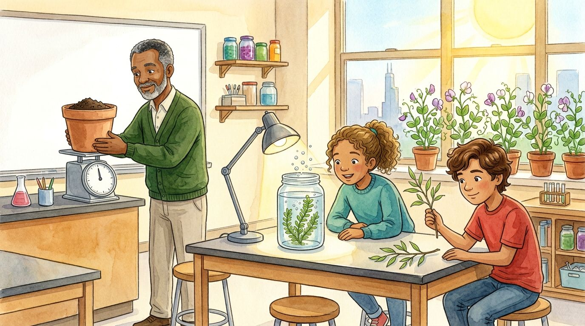

Grade 7 · Science · MS-LS1-6
The tree that grew out of nothing
A story about a 400-year-old experiment with a willow tree and the surprising place where a plant's mass really comes from.
El árbol que creció de la nada. Un cuento sobre un experimento de hace 400 años con un sauce y el lugar sorprendente de donde viene en realidad la masa de una planta.
Science words you will learn
Tap a green word to see what it means.
Toca una palabra verde para ver qué significa. Con la ayuda activada, verás también la definición en español.
The story
El cuento está en inglés. Pulsa «Listen to the story» para escucharlo y toca las palabras verdes cuando no entiendas una.
Mr. Mensah held up a tiny willow branch. "Here's a question that bothered people for thousands of years," he said. "A giant tree grows from a little seed or a branch. Where does all that wood come from?" "From the soil," said Elías right away. Most of the class agreed.
"About 400 years ago, a scientist named Jan Baptist van Helmont, in what is now Belgium, had the same idea," said Mr. Mensah, "so he tested it." He dried 200 pounds of soil in an oven, put it in a big pot, and planted a willow branch that weighed 5 pounds. For five years, he gave it nothing but water.
"After five years, the tree weighed about 169 pounds," Mr. Mensah went on. "Then van Helmont dried the soil and weighed it again." The kids leaned forward. "It had lost only about two ounces. The tree had gained about 164 pounds, but the soil had hardly changed at all." Elías's mouth fell open. "So it wasn't the soil!"
"Van Helmont's new was that the tree was made of water," said Mr. Mensah. "He was partly right, but he missed something invisible." He pointed to the air. "Most of a tree's comes from a gas: . Plants take it in through tiny holes in their leaves."
Athena frowned. "How can a gas turn into wood?" "That's ," said Mr. Mensah. "Inside the leaves, a green substance called captures energy from sunlight. The plant uses that energy to join carbon dioxide and water into a sugar called , and it lets oxygen out into the air." The plant uses the glucose for energy and to build its stems, roots and leaves.
To show them the oxygen, Mr. Mensah put a water plant in a jar under a bright lamp. After a few minutes, tiny silver bubbles began to rise from its leaves. When he turned the lamp off, the bubbles slowed down. "No light, no energy," said Daniel. "No energy, no photosynthesis."
Then Mr. Mensah drew a big circle on the board. "Plants take in carbon dioxide and give out oxygen. Animals, including you, breathe in oxygen and breathe out carbon dioxide. The same atoms go around and around between living things." "And the energy?" asked Sophia. "The energy comes from the sun," he said. "Every bite of food you eat has energy that a plant first caught from sunlight."
At the end of class, Elías looked at the willow branch again. "So a tree is mostly made of air," he said slowly. "Air, water and sunlight," said Mr. Mensah. Elías grinned. "Van Helmont would have been so annoyed. Five years of weighing, and the answer was floating right above the pot."
Glossary
- hypothesis
- A possible answer to a science question that can be tested with an experiment.
- hipótesis: Una respuesta posible a una pregunta científica que se puede comprobar con un experimento.
- matter
- Anything that has mass and takes up space: solids, liquids and gases.
- materia: Todo lo que tiene masa y ocupa espacio: sólidos, líquidos y gases.
- photosynthesis
- The process in which plants use energy from sunlight to turn carbon dioxide and water into sugar and oxygen.
- fotosíntesis: El proceso en que las plantas usan la energía de la luz del sol para convertir el dióxido de carbono y el agua en azúcar y oxígeno.
- carbon dioxide
- A gas in the air made of carbon and oxygen. Plants take it in, and animals breathe it out.
- dióxido de carbono: Un gas del aire formado por carbono y oxígeno. Las plantas lo toman y los animales lo exhalan.
- chlorophyll
- The green substance in leaves that captures the energy of sunlight.
- clorofila: La sustancia verde de las hojas que capta la energía de la luz del sol.
- glucose
- A sugar that plants make in photosynthesis. It stores energy and is used to build the plant.
- glucosa: Un azúcar que fabrican las plantas en la fotosíntesis. Guarda energía y sirve para formar la planta.
Questions
Choose the correct answer. If you make a mistake, the story shows you where the answer is.
Elige la respuesta correcta. Si te equivocas, el cuento te muestra dónde está la respuesta.
-
Question A. What did van Helmont give his willow tree for five years?
¿Qué le dio van Helmont a su sauce durante cinco años?
He planted the willow in 200 pounds of dried soil and gave it nothing but water for five years.
-
Question B. What did van Helmont find when he weighed the soil again?
¿Qué encontró van Helmont cuando volvió a pesar la tierra?
The tree gained about 164 pounds, but the soil lost only about two ounces.
-
Question C. Where does most of a tree's matter really come from?
¿De dónde viene en realidad la mayor parte de la materia de un árbol?
Most of a tree's matter comes from carbon dioxide, a gas the leaves take in from the air.
-
Question D. What does the plant make in photosynthesis?
¿Qué fabrica la planta en la fotosíntesis?
Using energy from sunlight, the plant joins carbon dioxide and water into glucose and lets oxygen out.
-
Question E. What goes around and around between plants and animals?
¿Qué va y viene entre las plantas y los animales?
Plants take in carbon dioxide and give out oxygen; animals do the opposite, so the same atoms go around and around.
Challenge: explain your thinking
Explain the evidence
Van Helmont's numbers were correct, but his conclusion was only partly right. Use his numbers to explain why the tree's mass could not have come from the soil, and then explain what he missed.
Explica la evidencia. Los números de van Helmont eran correctos, pero su conclusión era solo en parte acertada. Usa sus números para explicar por qué la masa del árbol no pudo venir de la tierra, y después explica qué se le escapó.
Answer in your notebook or talk it over with a classmate. Use evidence from the story.
Responde en tu cuaderno o coméntalo con un compañero. Usa evidencia del cuento.
Check your thinking
The tree gained about 164 pounds, but the soil lost only about two ounces, so the mass did not come from the soil. Van Helmont thought it all came from water, but he could not see that the leaves also take in carbon dioxide from the air. In photosynthesis, the plant uses energy from sunlight to join carbon dioxide and water into glucose, which builds the wood.